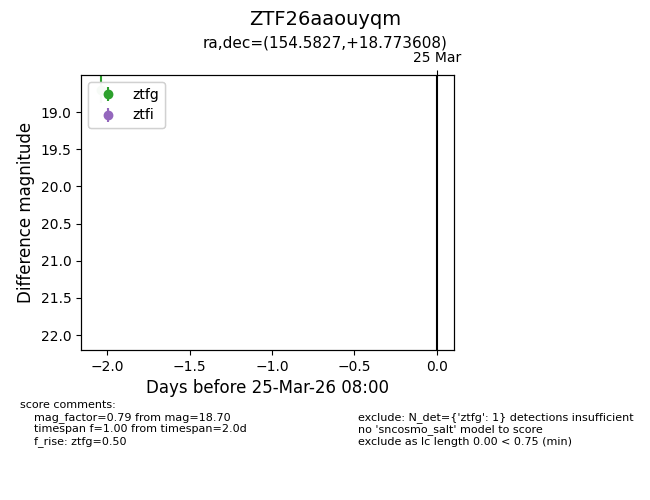
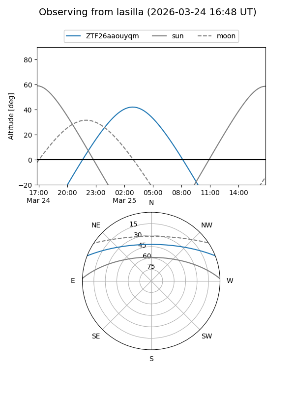
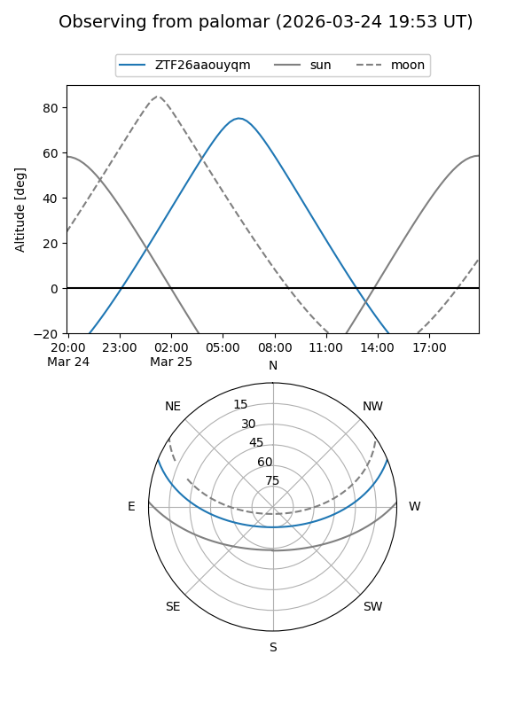

ZTF26aaouyqm
Target ZTF26aaouyqm at 2026-03-25 08:02
Aliases and brokers:
FINK: link
Lasair: link
ALeRCE: link
alt names
ZTF26aaouyqm (ztf,fink_ztf)
Coordinates:
equatorial (ra, dec) = 154.5827,+18.77361
equatorial (HMS+DMS) = 10:18:19.85,+18:46:24.99
galactic (l, b) = (218.0462,+53.92469)
Flags:
Photometry:
last ztfg=18.70
1 ztfg detections
Lightcurve

Visibility


Additional plots